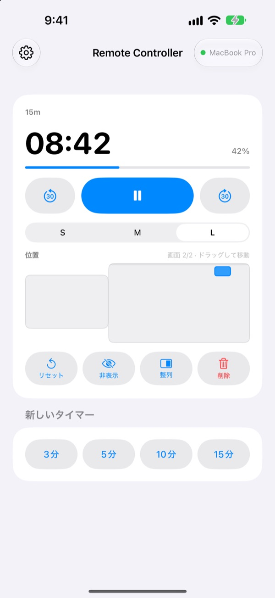
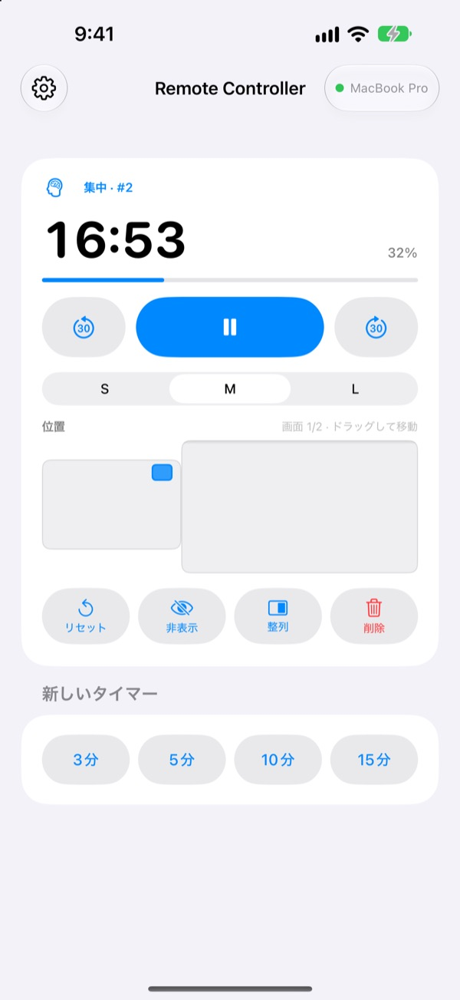
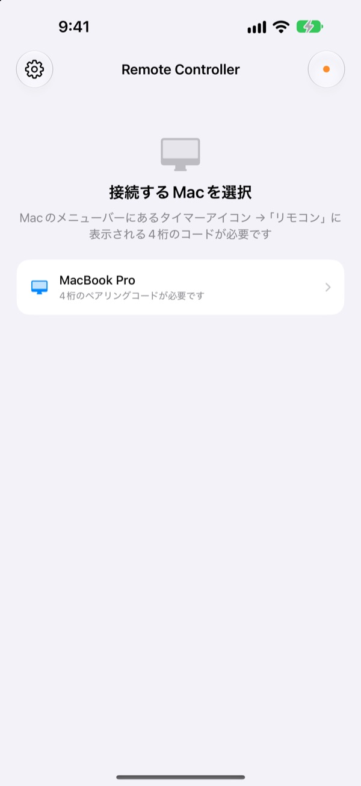

Macから離れても
タイマーは手の中に
MacのStickyPresenterのタイマーを、iPhoneから操作できます。前に出て話している間も、残り時間を確認し、一時停止し、30秒足し、グラフに重なったタイマーを脇へよけられます。
無料 · iOS 17以降 · 同じWi‑FiでStickyPresenterが起動しているMacが必要です。

タイマーに触るために、ノートパソコンまで戻っていませんか？
話が延びてもう少し時間がほしいとき。タイマーがいちばん見せたいグラフに重なっているとき。これまでは聴衆の前を横切って、トラックパッドに手を伸ばすしかありませんでした。Remote Controllerがあれば、立ち位置はそのまま、iPhoneを1回タップするだけです。
残り時間を見て、その場で調整
残り時間と進み具合は1秒ごとに更新。ポモドーロなら、いまが集中か休憩か、何サイクル目かもわかります。
話が延びたら30秒増やし、早く終わりそうなら30秒減らす。3分、5分、10分、15分の新しいタイマーはワンタップで開始でき、ウィジェットのサイズをS、M、Lで切り替えれば後ろの席からも読めます。

コードの入力は最初の1回だけ
アプリを開くと、同じWi‑FiでStickyPresenterが起動しているMacが一覧に並びます。自分のMacを選び、Macのメニューバーにあるタイマーアイコン ▸「リモコン」に表示される4桁のコードを入力すれば完了です。
次からはアプリを開くだけで、そのMacに自動でつながります。アカウントもサーバも不要。2台はローカルネットワーク上で直接やり取りします。

3ステップで使い始められます
- 1
MacでStickyPresenterを起動
メニューバーにタイマーアイコンが出ていれば準備完了です。ウインドウをすべて閉じても、アプリはメニューバーに残ります。
- 2
同じWi‑Fiでアプリを開く
ローカルネットワークへのアクセスを求められたら「許可」をタップしてください。これでMacを見つけられるようになります。
- 3
Macを選んでコードを入力
Macのメニューバーにあるタイマーアイコン ▸「リモコン」に表示される4桁のペアリングコードを入力すれば、すぐに操作できます。
iPhoneからできること
- 残り時間
- 残り時間、進み具合、ポモドーロの集中・休憩とサイクル数を1秒ごとに表示
- 開始 · 一時停止
- 中央の大きなボタンひとつで
- −30秒 · +30秒
- 左右のボタンで、動いているタイマーをすぐに調整
- 新しいタイマー
- 3分、5分、10分、15分
- サイズ
- ウィジェットをS、M、Lで
- 位置
- Macの画面配置を縮小したパッド上でドラッグ。拡張ディスプレイがあれば隣の画面へも移せます
- 非表示
- 聴衆からウィジェットを一時的に隠します
- 整列
- 見失ったウィジェットをタイマーウインドウの横に呼び戻します
- リセット · 削除
- タイマーを最初からやり直す、または削除します
- ショートカット · Siri
Remote Controllerでタイマーを開始と話しかけると、Macにタイマーを表示します
リモコンで操作できるのは、Macで動いているタイマーだけです。付箋やプロンプターの原稿がiPhoneに送られることはなく、スライドを送る機能もありません。
よくある質問
iPhoneアプリだけで使えますか？
いいえ。Remote ControllerはMac版StickyPresenterのリモコンなので、同じWi‑FiにつながっているMacでStickyPresenterが起動している必要があります。Macアプリは下のリンクか、アプリの設定にある「Macアプリを入手」から入手できます。
Macが一覧に表示されません。
10秒たってもMacが見つからないと、アプリに確認リストが表示されます。上から順に確認してください。MacでStickyPresenterが起動しているか（メニューバーのタイマーアイコン）、2台が同じWi‑Fiにつながっているか（ゲストネットワークでは使えません）、iPhoneの「設定」▸「プライバシーとセキュリティ」▸「ローカルネットワーク」でRemote Controllerがオンになっているか、Macの「システム設定」▸「プライバシーとセキュリティ」▸「ローカルネットワーク」でStickyPresenterが許可されているか、VPNがオフになっているか。
コードが違うと表示されます。
Macのメニューバーにあるタイマーアイコン ▸「リモコン」にいま表示されている4桁を入力してください。Macで「新しいペアリングコード」を押した場合は、新しいコードしか使えません。
MacがこのiPhoneを覚えていないと表示されます。
Macで「ペアリング済みのリモコンを解除」を選んだか、StickyPresenterを再インストールした場合に表示されます。一覧でMacをタップし、ペアリングコードをもう一度入力してください。
Macから応答がないと表示されます。
Macがスリープしていないか、2台が同じWi‑Fiにつながっているか、VPNがオフになっているかを確認してください。
「Macアプリのアップデートが必要です」と表示されます。
MacのStickyPresenterがリモコンより古いバージョンです。Mac App Storeでアップデートしてから、一覧でもう一度Macを選んでください。
Macが何台もある会議室でも大丈夫ですか？
大丈夫です。リモコンがつながるのはペアリングした1台のMacだけで、コードを知らないリモコンはあなたのMacに接続できません。やり取りはすべて、同じネットワーク内の暗号化された直接接続で行われます。誰かにコードを見られたことがあれば、Macで「新しいペアリングコード」を押してください。
インターネットに送られるものはありますか？
タイマーと操作の内容がローカルネットワークの外に出ることはありません。インターネットに送られるのは、匿名の利用統計、クラッシュレポート、ご自身で送ったご意見だけです。詳しくはプライバシーポリシーをご覧ください。
出番の直前にSiriでタイマーを始められますか？
はい。「Remote Controllerでタイマーを開始」と話しかけるか、ショートカットAppの「Macでタイマーを開始」アクションを使います。アプリが開き、Macにつながった時点で、指定した長さ（1〜600分）のタイマーが始まります。
ご質問、不具合、機能のご要望はmizzking75@gmail.comまでお送りください。アプリ左上の歯車 ▸「ご意見を送る」から、iPhoneで直接送ることもできます。